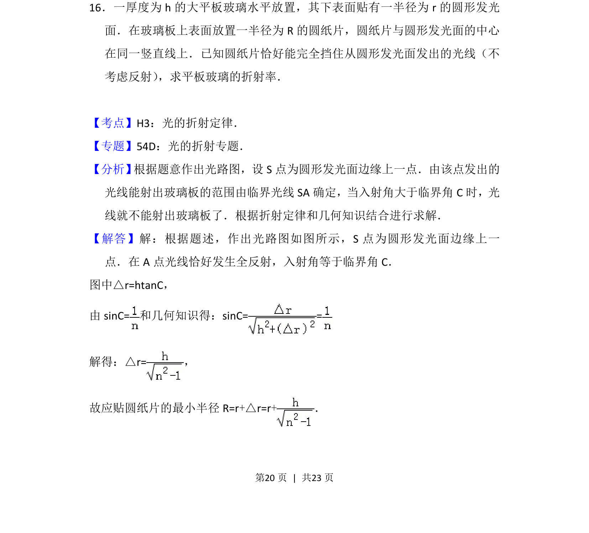
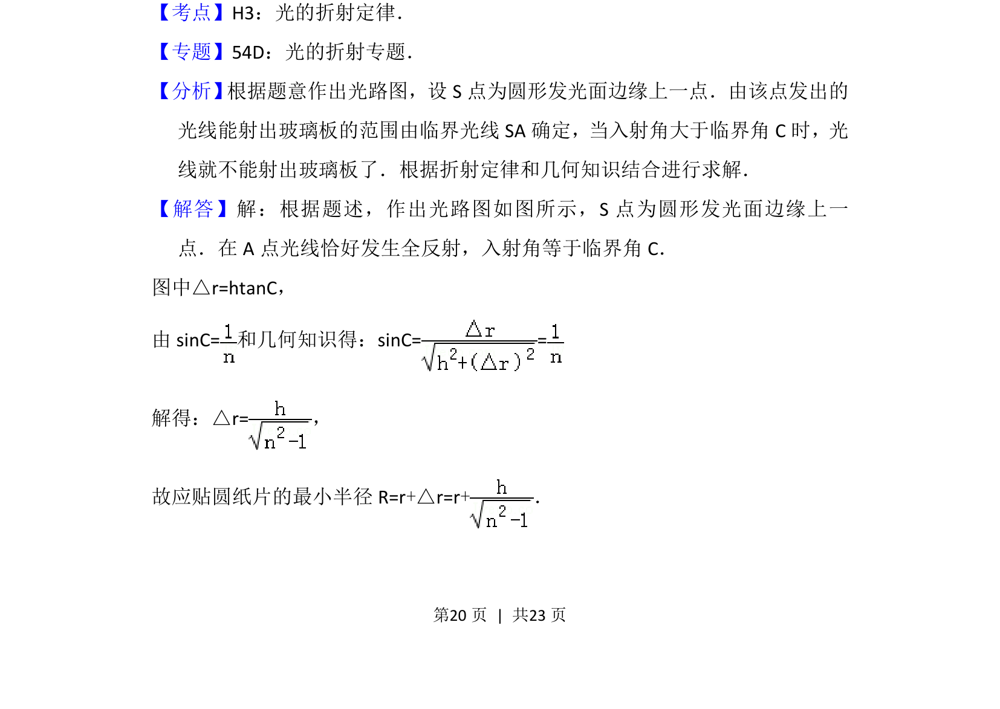
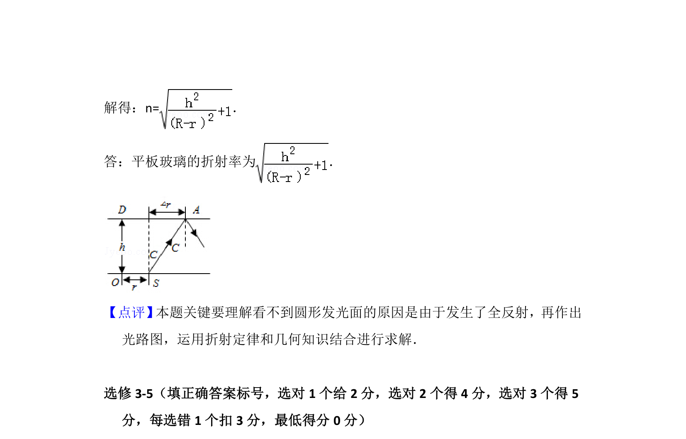

考点：全反射 折射定律 临界角 几何光学

此题考查全反射临界角、折射定律及几何光学，需结合光路图求折射率。


📄 原 PDF 第 20 页：
素材/真题/吉林/2008-2024·（吉林）物理高考真题/2014年高考物理试卷（新课标Ⅱ）（解析卷）.pdf
16．一厚度为h的大平板玻璃水平放置，其下表面贴有一半径为r的圆形发光 面．在玻璃板上表面放置一半径为R的圆纸片，圆纸片与圆形发光面的中心 在同一竖直线上．已知圆纸片恰好能完全挡住从圆形发光面发出的光线（不 考虑反射） ，求平板玻璃的折射率．
【考点】H3：光的折射定律．菁优网版权所有 【专题】54D：光的折射专题． 【分析】 根据题意作出光路图，设S点为圆形发光面边缘上一点．由该点发出的 光线能射出玻璃板的范围由临界光线SA确定，当入射角大于临界角C时，光 线就不能射出玻璃板了．根据折射定律和几何知识结合进行求解． 【解答】解：根据题述，作出光路图如图所示，S点为圆形发光面边缘上一 点．在A点光线恰好发生全反射，入射角等于临界角C． 图中△r=htanC， 由sinC=和几何知识得：sinC= = 解得：△r=， 故应贴圆纸片的最小半径R=r+△r=r+．